set1 <- RColorBrewer::brewer.pal(n = 8, name = "Set1")
options(ggplot2.discrete.fill = set1)
options(ggplot2.discrete.colour = set1)
ggplot2::theme_set(ggplot2::theme_bw())
ggplot2::theme_update(text = ggplot2::element_text(size = 15, family = "serif"))
options(scipen = 999)
if (!require("pacman")) install.packages("pacman")
pacman::p_load(dplyr, lme4, ggplot2, ggtext, scales, texreg)Time since mobility (robustness check, Study 2)
Setup
Same ggplot setup as 00-main_analysis.Rmd (color palette, theme_bw, serif font at size 15).
Purpose
This document builds a measure of the time elapsed since occupational mobility for respondents classified as Upward or Downward in mobility_cat_adj_isco3, validates it against the paper’s analytical sample (6,574 observations, 2,872 individuals), and uses it as a moderator in the weighted hybrid models.
The mobility event is dated by the last change. For each respondent, the event is the wave in which the respondent entered the occupational position held at the end of the panel, after which the position no longer changes. Respondents who changed position more than once (for example, M‑H‑M‑H) are therefore dated by their final transition. Two versions of the measure are created.
mob_time_cat, ordered categorical, based on the wave in which the last change appears. Stable (reference), recent mobility (2021–2023), intermediate mobility (2018–2021), and early mobility (2016–2018).mob_years_mid, continuous, equal to 2023 minus the midpoint of the interval in which the last change occurred (values 0, 1, 2.5, 3.5, 4.5, and 6). Stable respondents are coded 0.
All stable trajectories, including those reclassified under the 75% rule, form the reference category.
How the measure is classified. Occupation is recorded only in 2016, 2018, 2021, and 2023, so for each change we know the wave in which it appears and the last wave observed before it. The categorical version uses the wave in which the change appears. The continuous version counts years backward from 2023, the last wave, using the midpoint between the previous wave and the wave of the change.
| Change appears in | Previous observed wave | Category | Continuous |
|---|---|---|---|
| 2018 | 2016 | Early (2016–2018) | 2023 − (2016 + 2018)/2 = 6 |
| 2021 | 2018 | Intermediate (2018–2021) | 2023 − (2018 + 2021)/2 = 3.5 |
| 2021 | 2016 (2018 missing) | Intermediate (2018–2021) | 2023 − (2016 + 2021)/2 = 4.5 |
| 2023 | 2021 | Recent (2021–2023) | 2023 − (2021 + 2023)/2 = 1 |
| 2023 | 2018 (2021 missing) | Recent (2021–2023) | 2023 − (2018 + 2023)/2 = 2.5 |
| 2023 | 2016 (only two waves) | Recent (2021–2023) | 2023 − (2016 + 2023)/2 = 3.5 |
| No change (stable) | Not applicable | Stable (reference) | 0 |
Neither version measures the length of the interval between waves. For respondents who missed an intermediate wave, the change may have occurred before the window indicated by the category.
Text for the methodological appendix
Time since mobility
To examine whether the moderating role of mobility depends on how long ago respondents crossed an occupational boundary, I constructed a measure of the time elapsed since mobility for respondents classified as upwardly or downwardly mobile. Occupation is recorded in the 2016, 2018, 2021, and 2023 waves of ELSOC, the same waves used to build the mobility trajectories. For each mobile respondent, I identified the last change in occupational position (NEET, low-skill, intermediate-skill, or high-skill), defined as the wave in which the respondent entered the position held at the end of the panel and did not leave it afterwards. Respondents who changed position more than once are therefore dated by their final transition. All respondents classified as stable, including those reclassified as stable under the 75% rule, form the reference category. The measure is constant within individuals and was computed with all available waves before listwise deletion, so it has no missing values in the analytical sample (6,574 observations, 2,872 individuals).
Because occupation is observed only at each wave, the exact timing of a change is interval-censored. It is known only that the change occurred after the last wave observed before it and no later than the wave in which it was first observed. I therefore use an ordered categorical version as the main measure and a continuous version as an alternative.
The categorical version classifies mobile respondents by the wave in which the last change was observed.
| Category | Change observed in | Change occurred between |
|---|---|---|
| Stable (reference) | No change | Not applicable |
| Recent mobility | 2023 | 2021 and 2023 |
| Intermediate mobility | 2021 | 2018 and 2021 |
| Early mobility | 2018 | 2016 and 2018 |
For respondents who missed an intermediate wave, the change may have occurred earlier than the window indicated by the category. This applies to 30 respondents whose last change is observed in 2021 without a 2018 interview, 77 respondents whose last change is observed in 2023 without a 2021 interview, and 26 respondents observed only in 2016 and 2023.
The continuous version counts years backward from 2023, the last panel wave. It subtracts from 2023 the midpoint of the interval between the last wave observed before the change and the wave in which the change was observed. Stable respondents are assigned a value of 0.
| Value | Interval of the change | Calculation | Possible range (years) |
|---|---|---|---|
| 0 | No change (stable trajectory) | Not applicable | Not applicable |
| 1 | Between 2021 and 2023 | 2023 − (2021 + 2023)/2 | 0 to 2 |
| 2.5 | Between 2018 and 2023 (2021 not observed) | 2023 − (2018 + 2023)/2 | 0 to 5 |
| 3.5 | Between 2018 and 2021 | 2023 − (2018 + 2021)/2 | 2 to 5 |
| 3.5 | Between 2016 and 2023 (only these two waves observed) | 2023 − (2016 + 2023)/2 | 0 to 7 |
| 4.5 | Between 2016 and 2021 (2018 not observed) | 2023 − (2016 + 2021)/2 | 2 to 7 |
| 6 | Between 2016 and 2018 | 2023 − (2016 + 2018)/2 | 5 to 7 |
Both versions assume that respondents who left the panel before 2023 would have remained in the position observed after the change. The midpoint estimate carries an error of up to 3.5 years for respondents with nonconsecutive waves.
Step 1. Load the full panel
df1 is the panel without listwise deletion saved in 00-main_analysis.Rmd before na.omit(). It contains waves 1, 3, 5, and 7 (2016, 2018, 2021, and 2023) and the variable mobility_cat_adj_isco3.
if (!exists("path_df1")) path_df1 <- here::here("input/data/proc/df1_panel_for_mice.RData")
load(path_df1) # creates df1
df1 <- as.data.frame(df1)
dim(df1)[1] 8632 71table(df1$ola)
1 3 5 7
2927 2229 1739 1737 Step 2. Calendar year and occupational position in each wave
The coding is the same one that defines the trajectories (1 NEET, 2 low, 3 middle, 4 high; isco03_neet equal to 4 or NA becomes NEET). The timing therefore refers to exactly the same positions as mobility_cat_adj_isco3.
yr_map <- c(`1` = 2016, `3` = 2018, `5` = 2021, `7` = 2023)
df1$year <- unname(yr_map[as.character(df1$ola)])
df1$mob_t <- as.numeric(car::recode(as.numeric(df1$isco03_neet), "c(4,NA)=0")) + 1
stopifnot(!anyNA(df1$year), all(df1$mob_t %in% 1:4))
table(df1$year, df1$mob_t)
1 2 3 4
2016 1135 220 1133 439
2018 870 216 797 346
2021 707 149 583 300
2023 762 162 521 292Step 3. Date each respondent’s last change
yr_mob is the first wave of the final spell, that is, the wave from which the respondent stays in the position held at the end of the panel. yr_prev is the wave observed right before it, the last wave in which the respondent held a different position. The change occurred at some point in the interval (yr_prev, yr_mob].
timing <- df1 %>%
arrange(id, year) %>%
group_by(id) %>%
summarise(
n_waves = n(),
yr_mob = { o <- which(mob_t != last(mob_t)); if (length(o) == 0) NA_real_ else year[max(o) + 1] },
yr_prev = { o <- which(mob_t != last(mob_t)); if (length(o) == 0) NA_real_ else year[max(o)] },
.groups = "drop"
)
# Interval of the change: previous wave (rows) vs. wave of the change (columns)
table(timing$yr_prev, timing$yr_mob, useNA = "ifany")
2018 2021 2023 <NA>
2016 314 31 26 0
2018 0 353 108 0
2021 0 0 468 0
<NA> 0 0 0 1628Step 4. Build the measures
Time is assigned only to respondents classified as Upward or Downward. All stable respondents fall in the reference category (or are coded 0 in the continuous version).
df1 <- df1 %>%
left_join(timing, by = "id") %>%
mutate(
mobile = grepl("^(Upward|Downward)", as.character(mobility_cat_adj_isco3)),
mob_time_cat = factor(
case_when(!mobile ~ "Stable",
yr_mob == 2023 ~ "Recent",
yr_mob == 2021 ~ "Intermediate",
yr_mob == 2018 ~ "Early"),
levels = c("Stable", "Recent", "Intermediate", "Early")),
mob_years_mid = ifelse(mobile, 2023 - (yr_prev + yr_mob) / 2, 0)
)Step 5. Checks in the full panel
If any condition fails, stopifnot() stops the render.
# a. every mobile person has a dated change (first and last position differ)
stopifnot(all(!is.na(df1$yr_mob[df1$mobile])))
# b. no missings
stopifnot(!anyNA(df1$mob_time_cat), !anyNA(df1$mob_years_mid))
# c. allowed values
stopifnot(all(df1$mob_years_mid %in% c(0, 1, 2.5, 3.5, 4.5, 6)))
# d. stable = reference / 0, mobile never in the reference
stopifnot(all(df1$mob_time_cat[!df1$mobile] == "Stable"), all(df1$mob_time_cat[df1$mobile] != "Stable"),
all(df1$mob_years_mid[!df1$mobile] == 0), all(df1$mob_years_mid[df1$mobile] > 0))
# e. the midpoint lies inside its interval
stopifnot(all(df1$mob_years_mid[df1$mobile] >= 2023 - df1$yr_mob[df1$mobile] &
df1$mob_years_mid[df1$mobile] <= 2023 - df1$yr_prev[df1$mobile]))
# f. constant within person
stopifnot(all(tapply(df1$mob_years_mid, df1$id, function(x) length(unique(x))) == 1),
all(tapply(as.character(df1$mob_time_cat), df1$id, function(x) length(unique(x))) == 1))
cat("All checks in the full panel passed\n")All checks in the full panel passedStep 6. Rebuild the analytical sample
The prep-analysis-data chunk of 00-main_analysis.Rmd (exclusion of armed forces, select(), and na.omit()) is run twice, without and with the new variables.
militares <- df1 %>% filter(isco08_1lvl == "0000")
vars_paper <- c("id", "time",
"market", "just_educ", "just_salud", "just_pension",
"n_total", "isei_avg", "entropy_contacts", "know_total", "crossclass", "strong_tie",
"sex", "age", "parenteducw1", "migrationw1", "isco_father", "partner",
"isei_c", "isco03_neet",
"mobility_cat_adj_isco3", "mobility_cat_unadj", "mobility_cat_adj_isco3b",
"mobility_cat_adj_isco3c", "mobility_cat_adj_isco3d", "mobility_cat_adj_egp3", "moves",
"ponderador02", "weights1", "atricion")
vars_time <- c("mob_time_cat", "mob_years_mid")
# 6a. original sample (as in the paper)
an_orig <- df1 %>% filter(!id %in% militares$id) %>% select(all_of(vars_paper)) %>% na.omit()
# 6b. same sample with the new variables included before na.omit()
an_new <- df1 %>% filter(!id %in% militares$id) %>%
select(all_of(vars_paper), year, all_of(vars_time)) %>% na.omit()
an_new$mobility_profile <- car::recode(as.character(an_new$mobility_cat_adj_isco3),
"c('Downward (Any to NEET)','Downward (H to L)','Downward (H to M)','Downward (M to L)')='Downward';
c('Upward (L to H)','Upward (L to M)','Upward (M to H)','Upward (NEET to Any)')='Upward'")Step 7. Validation against the analytical sample
# 7a. adding the new variables does not drop any case
stopifnot(nrow(an_new) == nrow(an_orig))
# 7b. same N as in the paper (6,574 observations, 2,872 persons)
stopifnot(nrow(an_new) == 6574, n_distinct(an_new$id) == 2872)
# 7c. no missings in the new variables
stopifnot(!anyNA(an_new[, vars_time]))
cat("All checks in the analytical sample passed\n")All checks in the analytical sample passed# 7d. trajectory counts identical to Table S3
# Downward 872, Upward 998, Stable: high 660, low 289, middle 1681, NEET 2074
table(an_new$mobility_profile)
Downward Stable: high Stable: low Stable: middle Stable: NEET
872 660 289 1681 2074
Upward
998 Step 8. Distribution of the measure
persons <- an_new[!duplicated(an_new$id), ]
# Persons, categorical version
addmargins(table(persons$mobility_profile, persons$mob_time_cat))
Stable Recent Intermediate Early Sum
Downward 0 131 127 91 349
Stable: high 315 0 0 0 315
Stable: low 124 0 0 0 124
Stable: middle 775 0 0 0 775
Stable: NEET 908 0 0 0 908
Upward 0 167 121 113 401
Sum 2122 298 248 204 2872# Observations, categorical version
addmargins(table(an_new$mobility_profile, an_new$mob_time_cat))
Stable Recent Intermediate Early Sum
Downward 0 364 319 189 872
Stable: high 660 0 0 0 660
Stable: low 289 0 0 0 289
Stable: middle 1681 0 0 0 1681
Stable: NEET 2074 0 0 0 2074
Upward 0 464 287 247 998
Sum 4704 828 606 436 6574# Persons, continuous version
addmargins(table(persons$mobility_profile, persons$mob_years_mid))
0 1 2.5 3.5 4.5 6 Sum
Downward 0 72 50 123 13 91 349
Stable: high 315 0 0 0 0 0 315
Stable: low 124 0 0 0 0 0 124
Stable: middle 775 0 0 0 0 0 775
Stable: NEET 908 0 0 0 0 0 908
Upward 0 123 27 121 17 113 401
Sum 2122 195 77 244 30 204 2872Step 9. Bring the measure into paneldata137
There are two options.
- Option 1. Run Steps 1 to 4 before “Prepare final dataset” in
00-main_analysis.Rmdand add the two time variables to theselect()beforena.omit(). Step 7 shows that this drops no cases. - Option 2. Join by
idafterna.omit(), without changing the main pipeline.
idx <- match(paneldata137$id, df1$id)
for (v in vars_time) paneldata137[[v]] <- df1[[v]][idx]
stopifnot(!anyNA(as.data.frame(paneldata137)[, vars_time]))Because the measure is constant within individuals, its main effect is absorbed in fixed-effects models. It enters only as an interaction with within-person diversity.
Step 10. Weighted hybrid models with time since mobility
All models are weighted (weights1) hybrid random intercept models.
- Model 1. Diversity (WE) + time since mobility.
- Model 2. Diversity (WE) + time since mobility + trajectory.
- Model 3. Diversity (WE) × time since mobility + trajectory.
- Model 4. Diversity (WE) × time since mobility × trajectory.
- Model 3L and Model 4L. Models 3 and 4 with the continuous version of time.
The analysis variables are first built as in 00-main_analysis.Rmd (weighted PCA diversity index, standardized dependent variable, person means and deviations).
paneldata137 <- an_new
pca_fit_v10 <- psych::pca(r = paneldata137 %>% select(entropy_contacts, know_total, crossclass),
nfactors = 1, rotate = "oblimin", scores = TRUE, missing = TRUE,
cor = "cor", weight = paneldata137$ponderador02)
paneldata137$diversityclass <- as.numeric(pca_fit_v10$scores)
paneldata137$mobility_profile <- relevel(factor(paneldata137$mobility_profile), ref = "Stable: low")
paneldata137$parenteducw1 <- factor(paneldata137$parenteducw1, ordered = FALSE)
paneldata137$migrationw1 <- factor(paneldata137$migrationw1, ordered = FALSE)
paneldata137$time <- factor(car::recode(paneldata137$time, recodes = "3=2;7=3"))
paneldata137$market1 <- as.numeric(scale(paneldata137$market))
paneldata137$diversityclass_gm <- ave(paneldata137$diversityclass, paneldata137$id, FUN = mean)
paneldata137$partner_gm <- ave(paneldata137$partner, paneldata137$id, FUN = mean)
paneldata137$diversityclass_gc <- paneldata137$diversityclass - paneldata137$diversityclass_gmAs a check, the weighted model with the trajectory should reproduce Table S4 (diversity 0.091, Diversity × Stable: high -0.285).
hlm_check <- lme4::lmer(market1 ~ diversityclass_gc*mobility_profile + diversityclass_gm + sex + age +
parenteducw1 + migrationw1 + partner + partner_gm + time + (1|id),
data = paneldata137, weights = weights1)
round(lme4::fixef(hlm_check)[c("diversityclass_gc", "diversityclass_gc:mobility_profileStable: high")], 3) diversityclass_gc
0.091
diversityclass_gc:mobility_profileStable: high
-0.285 Identification. Time categories exist only for mobile respondents, and Upward + Downward add up to the same as recent + intermediate + early. When time and trajectory enter together as main effects (Models 2 and 3), one time category cannot be estimated. In those models, the time main effects are expressed relative to early mobility, and Upward and Downward refer to early movers compared with Stable: low. The Model 3 interactions do use stable respondents as the reference. Model 4 combines trajectory and time in a single 10-category variable (reference Stable: low), which is equivalent to the full three-way interaction. In Model 4L, the three-way interaction is estimated only for Upward and Downward, because stable respondents are always 0.
Functions
fit_time_models() estimates all models, weighted (weights1) by default or unweighted with weighted = FALSE. ame_lc() computes the AME of diversity (WE) as a linear combination of coefficients. Because the models are linear, the AME of diversity in each group is its within-person slope, and standard errors are computed with the delta method.
ctrl <- "diversityclass_gm + sex + age + parenteducw1 + migrationw1 + partner + partner_gm + time + (1|id)"
cats <- c("Stable", "Recent", "Intermediate", "Early")
add_time_vars <- function(d, weighted = TRUE) {
d$w_use <- if (weighted) d$weights1 else 1
d$t_recent <- as.numeric(d$mob_time_cat == "Recent")
d$t_inter <- as.numeric(d$mob_time_cat == "Intermediate")
tt <- as.character(d$mobility_profile)
mv <- d$mob_time_cat != "Stable"
tt[mv] <- paste0(tt[mv], ": ", d$mob_time_cat[mv])
d$traj_time <- relevel(factor(tt), ref = "Stable: low")
d$yrs_up <- d$mob_years_mid * (d$mobility_profile == "Upward")
d$yrs_down <- d$mob_years_mid * (d$mobility_profile == "Downward")
d
}
fit_time_models <- function(d, weighted = TRUE) {
d <- add_time_vars(d, weighted)
f <- c(
m1 = "diversityclass_gc + mob_time_cat",
m2 = "diversityclass_gc + mobility_profile + t_recent + t_inter",
m3 = "diversityclass_gc + diversityclass_gc:mob_time_cat + mobility_profile + t_recent + t_inter",
m4 = "diversityclass_gc*traj_time",
m3l = "diversityclass_gc*mob_years_mid + mobility_profile",
m4l = "diversityclass_gc*mobility_profile + yrs_up + yrs_down + diversityclass_gc:yrs_up + diversityclass_gc:yrs_down")
lapply(f, function(x) lme4::lmer(as.formula(paste("market1 ~", x, "+", ctrl)), data = d, weights = w_use))
}
ame_lc <- function(m, w) {
b <- lme4::fixef(m); V <- as.matrix(vcov(m))
L <- setNames(rep(0, length(b)), names(b)); L[names(w)] <- unlist(w)
est <- sum(L * b); se <- sqrt(drop(t(L) %*% V %*% L))
data.frame(AME = est, SE = se, lo = est - 1.96 * se, hi = est + 1.96 * se,
p = 2 * pnorm(-abs(est / se)))
}
# AME by time category (Model 3)
ame_cat_m3 <- function(m) {
out <- do.call(rbind, lapply(cats, function(k) {
w <- list(diversityclass_gc = 1)
if (k != "Stable") w[[paste0("diversityclass_gc:mob_time_cat", k)]] <- 1
cbind(time = k, ame_lc(m, w))
}))
out$time <- factor(out$time, levels = cats)
out
}
# AME by trajectory and time category (Model 4)
ame_cat_m4 <- function(m) {
cells <- expand.grid(time = cats[-1], traj = c("Upward", "Downward"), stringsAsFactors = FALSE)
do.call(rbind, lapply(seq_len(nrow(cells)), function(i) {
w <- list(diversityclass_gc = 1)
w[[paste0("diversityclass_gc:traj_time", cells$traj[i], ": ", cells$time[i])]] <- 1
cbind(cells[i, c("traj", "time")], ame_lc(m, w))
}))
}
# Linear prediction of the AME along years since mobility (Models 3L and 4L)
ame_line <- function(m, base, slope_term, years) {
do.call(rbind, lapply(years, function(t) {
w <- base; w[[slope_term]] <- t
cbind(years = t, ame_lc(m, w))
}))
}
ame_lin_m3 <- function(m) ame_line(m, list(diversityclass_gc = 1), "diversityclass_gc:mob_years_mid", seq(0, 6, by = 0.1))
ame_lin_m4 <- function(m) {
out <- rbind(
cbind(traj = "Upward", ame_line(m, list(diversityclass_gc = 1, "diversityclass_gc:mobility_profileUpward" = 1),
"diversityclass_gc:yrs_up", seq(1, 6, by = 0.1))),
cbind(traj = "Downward", ame_line(m, list(diversityclass_gc = 1, "diversityclass_gc:mobility_profileDownward" = 1),
"diversityclass_gc:yrs_down", seq(1, 6, by = 0.1))))
out$traj <- factor(out$traj, levels = c("Upward", "Downward"))
out
}
coef_lab <- function(m, term) {
r <- ame_lc(m, setNames(list(1), term))
paste0("Diversity x Years = ", number(r$AME, accuracy = 0.001),
" (p = ", ifelse(r$p < 0.001, "<0.001", number(r$p, accuracy = 0.001)), ")")
}Plot functions
The plots follow the style of Figure 3 in the paper (figure002-AME in 00-main_analysis.Rmd).
y_ame <- "AME of network diversity (WE)"
ame_label <- function(df) {
df %>% mutate(
est_str = number(AME, accuracy = 0.001, big.mark = "", decimal.mark = "."),
p_str = ifelse(p < 0.001, "<0.001", number(p, accuracy = 0.001, big.mark = "", decimal.mark = ".")),
lab = paste0(est_str, " (p = ", p_str, ")"))
}
# Same note as Figure 3 in the paper (figure002-AME), plus "weighted" / "unweighted"
note_hlm <- function(m) paste0(
"*Note*: N = ", nobs(m), " (", lme4::ngrps(m)[["id"]], " individuals). 95% CIs.<br>Based on ",
ifelse(all(stats::weights(m) == 1), "unweighted", "weighted"), " hierarchical linear model (HLM)")
theme_note <- theme(plot.caption = element_markdown(hjust = 1, size = 13, family = "serif"),
panel.grid.minor = element_blank())
time_labels <- c("Stable" = "Stable\n(ref.)", "Recent" = "Recent\n(2021-2023)",
"Intermediate" = "Intermediate\n(2018-2021)", "Early" = "Early\n(2016-2018)")
plot_cat_m3 <- function(ame, m) {
ggplot(ame_label(ame), aes(x = time, y = AME, label = lab)) +
geom_hline(yintercept = 0, linetype = "dashed", color = "grey50") +
geom_pointrange(aes(ymin = lo, ymax = hi), size = 0.6, fatten = 2, color = "black") +
geom_text(nudge_y = -0.01, nudge_x = 0.2, hjust = 0, size = 3.4, family = "serif") +
scale_x_discrete(labels = time_labels) +
scale_y_continuous(expand = expansion(mult = c(0.05, 0.45))) +
coord_flip(clip = "off") +
labs(x = NULL, y = y_ame, caption = note_hlm(m)) +
theme_note
}
plot_cat_m4 <- function(ame, m) {
ame$time <- factor(ame$time, levels = cats[-1])
ame$traj <- factor(ame$traj, levels = c("Upward", "Downward"))
ggplot(ame_label(ame), aes(x = time, y = AME, label = lab)) +
geom_hline(yintercept = 0, linetype = "dashed", color = "grey50") +
geom_pointrange(aes(ymin = lo, ymax = hi), size = 0.6, fatten = 2, color = "black") +
geom_text(nudge_y = -0.01, nudge_x = 0.2, hjust = 0, size = 3.4, family = "serif") +
scale_x_discrete(labels = time_labels) +
scale_y_continuous(expand = expansion(mult = c(0.05, 0.45))) +
coord_flip(clip = "off") +
facet_wrap(~ traj) +
labs(x = NULL, y = y_ame, caption = note_hlm(m)) +
theme_note
}
plot_lin_m3 <- function(line, m) {
ggplot(line, aes(x = years, y = AME)) +
geom_hline(yintercept = 0, linetype = "dashed", color = "grey50") +
geom_ribbon(aes(ymin = lo, ymax = hi), fill = "grey80", alpha = 0.6) +
geom_line(linewidth = 0.8, color = "black") +
annotate("text", x = 0, y = -Inf, label = coef_lab(m, "diversityclass_gc:mob_years_mid"),
hjust = 0, vjust = -1, size = 3.4, family = "serif") +
labs(x = "Years since mobility", y = y_ame, caption = note_hlm(m)) +
theme_note
}
plot_lin_m4 <- function(line, m) {
labs_df <- data.frame(traj = factor(c("Upward", "Downward"), levels = c("Upward", "Downward")),
lab = c(coef_lab(m, "diversityclass_gc:yrs_up"), coef_lab(m, "diversityclass_gc:yrs_down")))
ggplot(line, aes(x = years, y = AME)) +
geom_hline(yintercept = 0, linetype = "dashed", color = "grey50") +
geom_ribbon(aes(ymin = lo, ymax = hi), fill = "grey80", alpha = 0.6) +
geom_line(linewidth = 0.8, color = "black") +
geom_text(data = labs_df, aes(x = 1, y = -Inf, label = lab), inherit.aes = FALSE,
hjust = 0, vjust = -1, size = 3.4, family = "serif") +
facet_wrap(~ traj) +
labs(x = "Years since mobility", y = y_ame, caption = note_hlm(m)) +
theme_note
}
save_fig <- function(p, file, width) {
ggsave(plot = p, filename = file, path = here::here("output/images"),
width = width, height = 1, scale = 15, device = "png", units = "cm", dpi = "retina")
}Models
time_mods <- fit_time_models(paneldata137)
sapply(time_mods, function(m) ncol(lme4::getME(m, "X"))) # 18, 22, 25, 33, 22, 29 fixed effects m1 m2 m3 m4 m3l m4l
18 22 25 33 22 29 AMEs
ame <- list(
cat_m3 = ame_cat_m3(time_mods$m3),
cat_m4 = ame_cat_m4(time_mods$m4),
lin_m3 = ame_lin_m3(time_mods$m3l),
lin_m4 = ame_lin_m4(time_mods$m4l))
# Categorical, Model 3
ame$cat_m3 %>% mutate(across(where(is.numeric), ~ round(.x, 3)))| time | AME | SE | lo | hi | p |
|---|---|---|---|---|---|
| Stable | -0.033 | 0.020 | -0.072 | 0.007 | 0.109 |
| Recent | -0.148 | 0.042 | -0.231 | -0.066 | 0.000 |
| Intermediate | -0.097 | 0.048 | -0.191 | -0.003 | 0.043 |
| Early | -0.189 | 0.061 | -0.310 | -0.069 | 0.002 |
# Categorical, Model 4
ame$cat_m4 %>% mutate(across(where(is.numeric), ~ round(.x, 3)))| traj | time | AME | SE | lo | hi | p |
|---|---|---|---|---|---|---|
| Upward | Recent | -0.123 | 0.057 | -0.234 | -0.011 | 0.031 |
| Upward | Intermediate | -0.044 | 0.072 | -0.184 | 0.097 | 0.544 |
| Upward | Early | -0.243 | 0.077 | -0.394 | -0.092 | 0.002 |
| Downward | Recent | -0.179 | 0.062 | -0.300 | -0.058 | 0.004 |
| Downward | Intermediate | -0.140 | 0.064 | -0.266 | -0.015 | 0.028 |
| Downward | Early | -0.098 | 0.100 | -0.294 | 0.099 | 0.331 |
# Linear interaction terms
c(m3l_years = coef_lab(time_mods$m3l, "diversityclass_gc:mob_years_mid"),
m4l_years_up = coef_lab(time_mods$m4l, "diversityclass_gc:yrs_up"),
m4l_years_down = coef_lab(time_mods$m4l, "diversityclass_gc:yrs_down")) m3l_years
"Diversity x Years = -0.028 (p = 0.001)"
m4l_years_up
"Diversity x Years = -0.022 (p = 0.285)"
m4l_years_down
"Diversity x Years = -0.014 (p = 0.592)" Plots
p <- plot_cat_m3(ame$cat_m3, time_mods$m3); p; save_fig(p, "figureS_time_mobility.png", 1)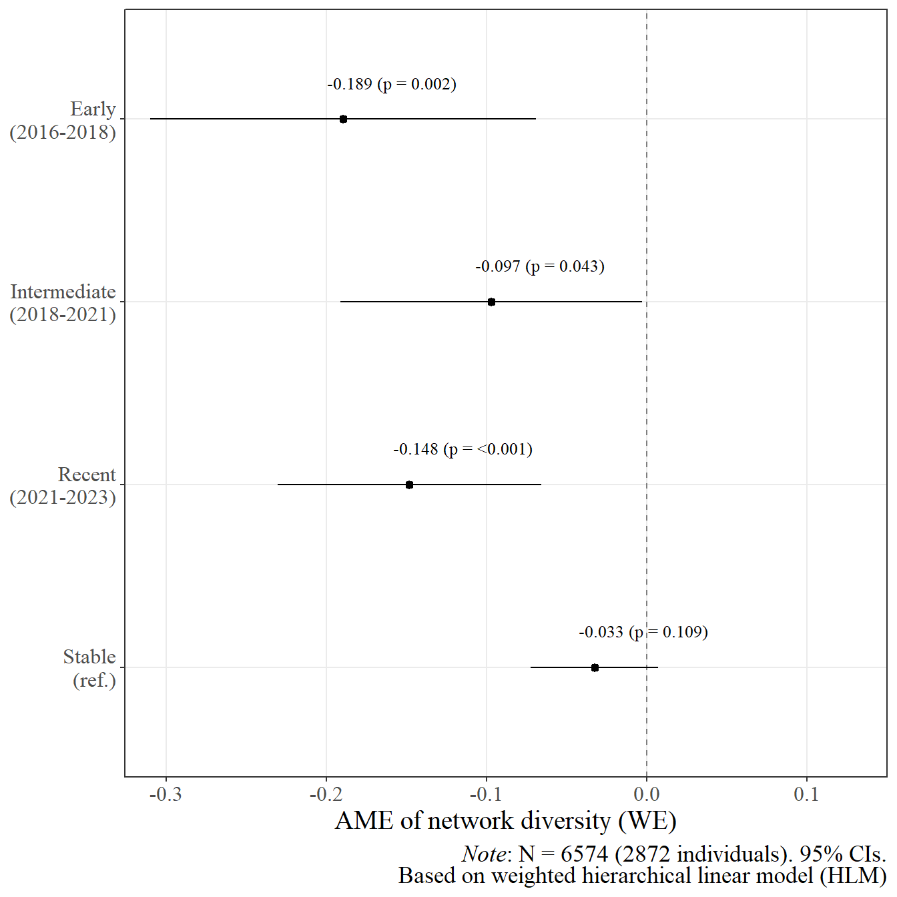
p <- plot_lin_m3(ame$lin_m3, time_mods$m3l); p; save_fig(p, "figureS_time_mobility_linear.png", 1)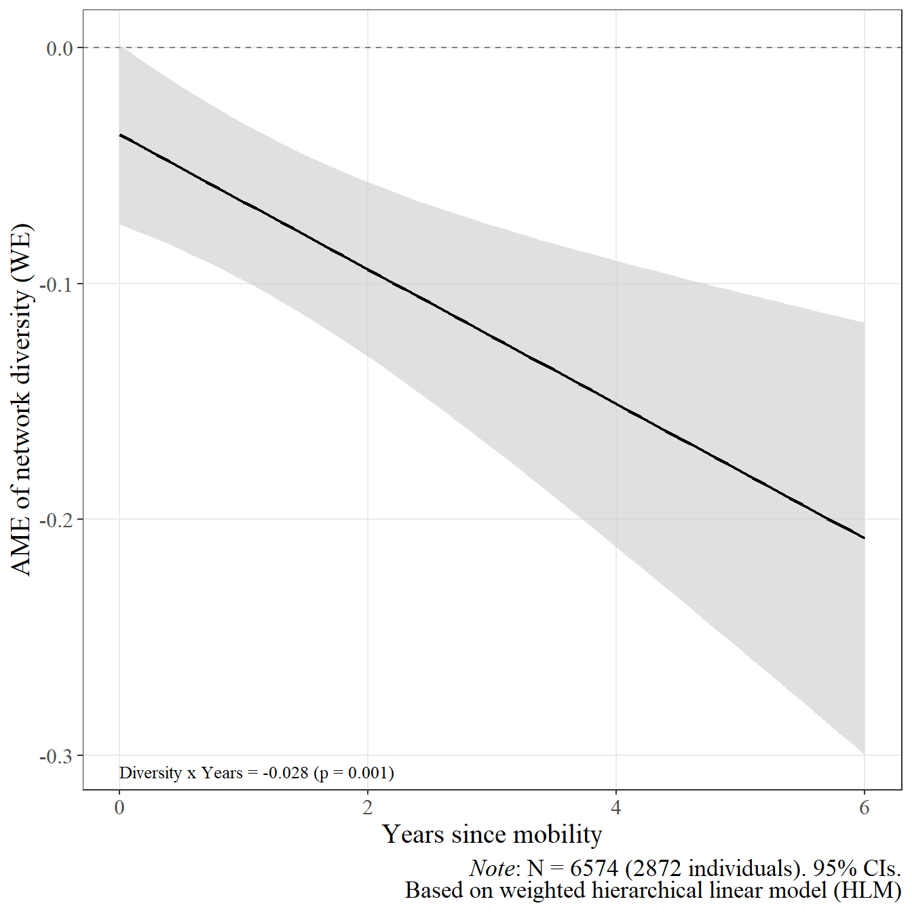
p <- plot_cat_m4(ame$cat_m4, time_mods$m4); p; save_fig(p, "figureS_time_mobility_traj.png", 2)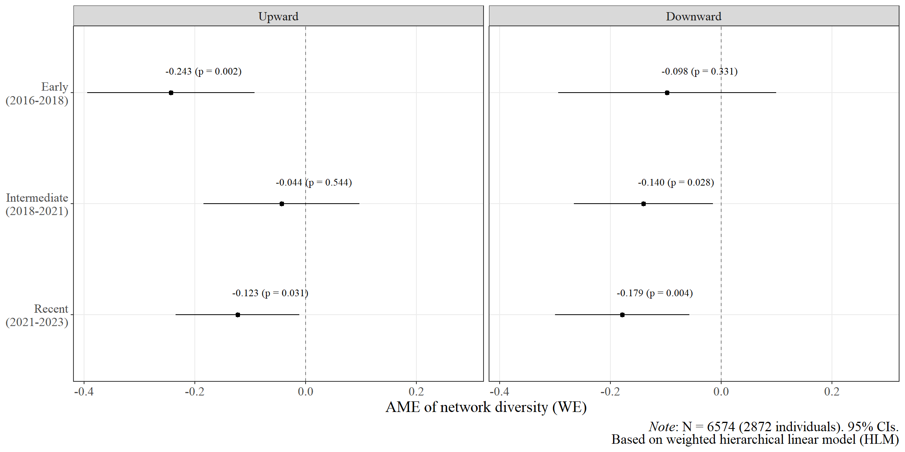
p <- plot_lin_m4(ame$lin_m4, time_mods$m4l); p; save_fig(p, "figureS_time_mobility_linear_traj.png", 2)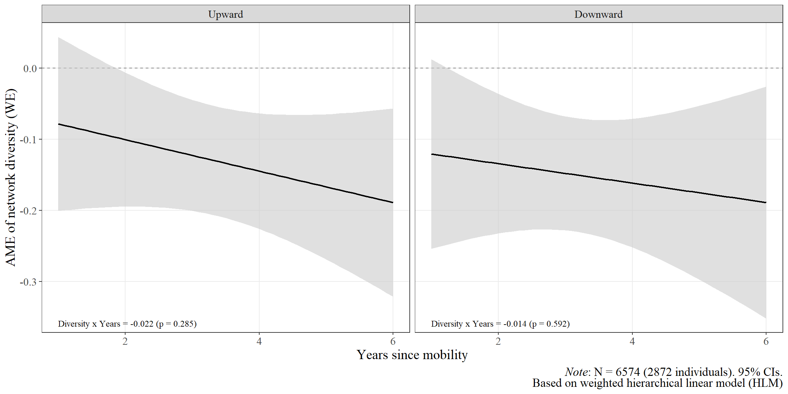
Tables
Table S12 reports the weighted categorical models (Models 1 to 4). Table S13 reports the same models without weights (final robustness test below).
var_labels_time <- list(
"diversityclass_gc" = "Network diversity (WE)",
"mob_time_catRecent" = "Recent mobility (ref.=Stable)",
"mob_time_catIntermediate" = "Intermediate mobility",
"mob_time_catEarly" = "Early mobility",
"t_recent" = "Recent mobility (ref.=Early)",
"t_inter" = "Intermediate mobility (ref.=Early)",
"mobility_profileStable: NEET" = "Stable: NEET (ref.=Stable: low)",
"mobility_profileStable: middle" = "Stable: middle",
"mobility_profileStable: high" = "Stable: high",
"mobility_profileUpward" = "Upward",
"mobility_profileDownward" = "Downward",
"traj_timeStable: NEET" = "Stable: NEET (ref.=Stable: low)",
"traj_timeStable: middle" = "Stable: middle",
"traj_timeStable: high" = "Stable: high",
"traj_timeUpward: Recent" = "Upward: Recent",
"traj_timeUpward: Intermediate" = "Upward: Intermediate",
"traj_timeUpward: Early" = "Upward: Early",
"traj_timeDownward: Recent" = "Downward: Recent",
"traj_timeDownward: Intermediate" = "Downward: Intermediate",
"traj_timeDownward: Early" = "Downward: Early",
"diversityclass_gc:mob_time_catRecent" = "Diversity × Recent mobility",
"diversityclass_gc:mob_time_catIntermediate" = "Diversity × Intermediate mobility",
"diversityclass_gc:mob_time_catEarly" = "Diversity × Early mobility",
"diversityclass_gc:traj_timeStable: NEET" = "Diversity × Stable: NEET",
"diversityclass_gc:traj_timeStable: middle" = "Diversity × Stable: middle",
"diversityclass_gc:traj_timeStable: high" = "Diversity × Stable: high",
"diversityclass_gc:traj_timeUpward: Recent" = "Diversity × Upward: Recent",
"diversityclass_gc:traj_timeUpward: Intermediate" = "Diversity × Upward: Intermediate",
"diversityclass_gc:traj_timeUpward: Early" = "Diversity × Upward: Early",
"diversityclass_gc:traj_timeDownward: Recent" = "Diversity × Downward: Recent",
"diversityclass_gc:traj_timeDownward: Intermediate" = "Diversity × Downward: Intermediate",
"diversityclass_gc:traj_timeDownward: Early" = "Diversity × Downward: Early",
"diversityclass_gm" = "Network diversity (BE)",
"sex" = "Female (ref.=Male)",
"age" = "Age",
"partner" = "Has partner (ref.=No)",
"partner_gm" = "Partner (BE)",
"time2" = "2018 (ref.=2016)",
"time3" = "2023",
"(Intercept)" = "Constant")
note_time <- function(weighted = TRUE) paste0(
"%stars. Standard errors in parentheses. Hybrid random intercept models (REML), ",
ifelse(weighted, "weighted", "unweighted"), ".<br>",
"Time since mobility is classified by the wave of the last observed change. Recent (2021–2023), ",
"intermediate (2018–2021), and early (2016–2018) mobility. Stable trajectories are the reference.<br>",
"In Models 2 and 3, time main effects are expressed relative to early mobility, because time categories and ",
"mobility trajectories are not jointly identified. Model 4 combines trajectory and time in a single factor ",
"(reference Stable: low).<br>",
"Controls include parental education and migration background. The dependent variable is standardized (z-score).")
htmlreg(unname(time_mods[c("m1", "m2", "m3", "m4")]),
digits = 3, stars = c(0.001, 0.01, 0.05, 0.1), caption.above = TRUE,
caption = "Table S12. Hybrid multilevel models for market justice preferences, network diversity and time since mobility",
custom.model.names = paste("Model", 1:4),
custom.coef.map = var_labels_time,
custom.gof.rows = list("Controls" = rep("Yes", 4), "Weights" = rep("Yes", 4)),
include.aic = FALSE, include.loglik = FALSE,
custom.note = note_time(TRUE),
file = here::here("output/tables/table_time_since_mobility.html"))Step 11. Final robustness test: weighted vs. unweighted
The models in Step 10 use the survey weights (weights1). As a last robustness test, the same models are re-estimated without weights, and the AMEs of network diversity (WE) are compared side by side. Everything else (sample, controls, time measure) is identical.
time_mods_unw <- fit_time_models(paneldata137, weighted = FALSE)
stopifnot(all(stats::weights(time_mods_unw$m3) == 1), any(stats::weights(time_mods$m3) != 1))
ame_unw <- list(
cat_m3 = ame_cat_m3(time_mods_unw$m3),
cat_m4 = ame_cat_m4(time_mods_unw$m4),
lin_m3 = ame_lin_m3(time_mods_unw$m3l),
lin_m4 = ame_lin_m4(time_mods_unw$m4l))AMEs, weighted vs. unweighted
r3 <- function(x) round(x, 3)
# Categorical, Model 3
merge(ame$cat_m3[, c("time", "AME", "SE", "p")], ame_unw$cat_m3[, c("time", "AME", "SE", "p")],
by = "time", suffixes = c("_weighted", "_unweighted")) %>%
arrange(time) %>% mutate(across(where(is.numeric), r3))| time | AME_weighted | SE_weighted | p_weighted | AME_unweighted | SE_unweighted | p_unweighted |
|---|---|---|---|---|---|---|
| Stable | -0.033 | 0.020 | 0.109 | -0.053 | 0.023 | 0.022 |
| Recent | -0.148 | 0.042 | 0.000 | -0.093 | 0.051 | 0.069 |
| Intermediate | -0.097 | 0.048 | 0.043 | -0.115 | 0.063 | 0.069 |
| Early | -0.189 | 0.061 | 0.002 | 0.030 | 0.071 | 0.669 |
# Categorical, Model 4
merge(ame$cat_m4[, c("traj", "time", "AME", "SE", "p")], ame_unw$cat_m4[, c("traj", "time", "AME", "SE", "p")],
by = c("traj", "time"), suffixes = c("_weighted", "_unweighted")) %>%
mutate(across(where(is.numeric), r3))| traj | time | AME_weighted | SE_weighted | p_weighted | AME_unweighted | SE_unweighted | p_unweighted |
|---|---|---|---|---|---|---|---|
| Downward | Early | -0.098 | 0.100 | 0.331 | 0.169 | 0.103 | 0.100 |
| Downward | Intermediate | -0.140 | 0.064 | 0.028 | -0.162 | 0.084 | 0.054 |
| Downward | Recent | -0.179 | 0.062 | 0.004 | -0.071 | 0.074 | 0.334 |
| Upward | Early | -0.243 | 0.077 | 0.002 | -0.098 | 0.098 | 0.321 |
| Upward | Intermediate | -0.044 | 0.072 | 0.544 | -0.058 | 0.095 | 0.537 |
| Upward | Recent | -0.123 | 0.057 | 0.031 | -0.113 | 0.069 | 0.103 |
# Linear interaction terms (Models 3L and 4L)
bind_rows(
lapply(list(weighted = time_mods, unweighted = time_mods_unw), function(ms) {
rbind(cbind(term = "Diversity x Years (Model 3L)", ame_lc(ms$m3l, list("diversityclass_gc:mob_years_mid" = 1))),
cbind(term = "Diversity x Years, Upward (Model 4L)", ame_lc(ms$m4l, list("diversityclass_gc:yrs_up" = 1))),
cbind(term = "Diversity x Years, Downward (Model 4L)", ame_lc(ms$m4l, list("diversityclass_gc:yrs_down" = 1))))
}), .id = "estimation") %>%
select(estimation, term, AME, SE, p) %>% mutate(across(where(is.numeric), r3))| estimation | term | AME | SE | p |
|---|---|---|---|---|
| weighted | Diversity x Years (Model 3L) | -0.028 | 0.009 | 0.001 |
| weighted | Diversity x Years, Upward (Model 4L) | -0.022 | 0.021 | 0.285 |
| weighted | Diversity x Years, Downward (Model 4L) | -0.014 | 0.025 | 0.592 |
| unweighted | Diversity x Years (Model 3L) | 0.001 | 0.011 | 0.888 |
| unweighted | Diversity x Years, Upward (Model 4L) | 0.004 | 0.025 | 0.876 |
| unweighted | Diversity x Years, Downward (Model 4L) | 0.031 | 0.028 | 0.271 |
Plots, unweighted models
p <- plot_cat_m3(ame_unw$cat_m3, time_mods_unw$m3); p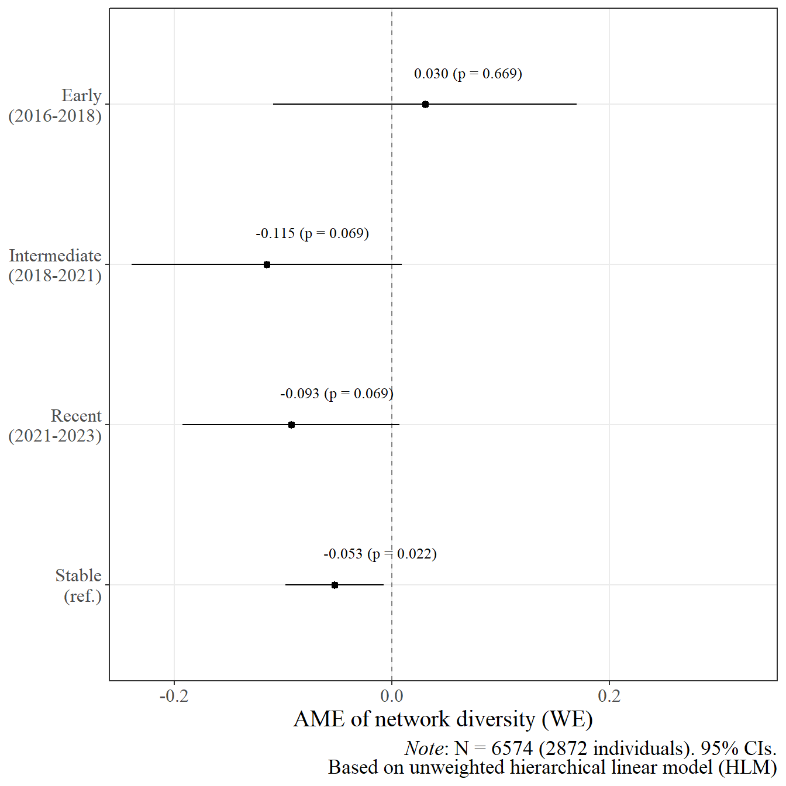
p <- plot_lin_m3(ame_unw$lin_m3, time_mods_unw$m3l); p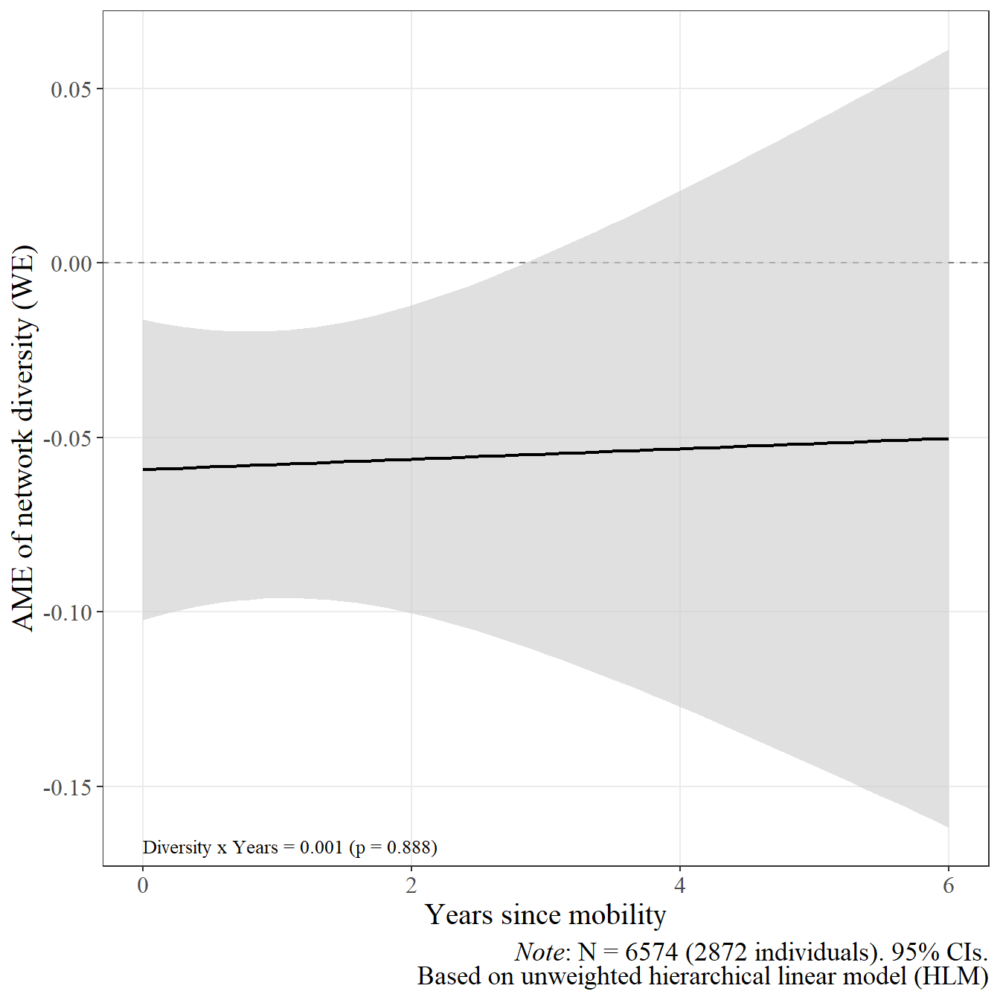
p <- plot_cat_m4(ame_unw$cat_m4, time_mods_unw$m4); p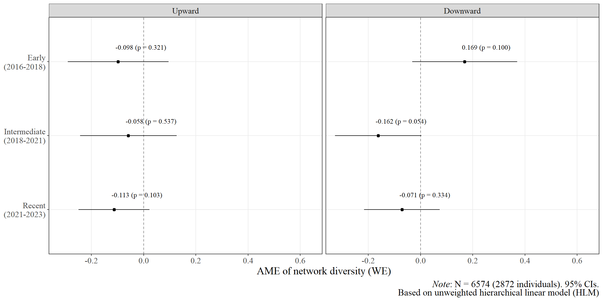
p <- plot_lin_m4(ame_unw$lin_m4, time_mods_unw$m4l); p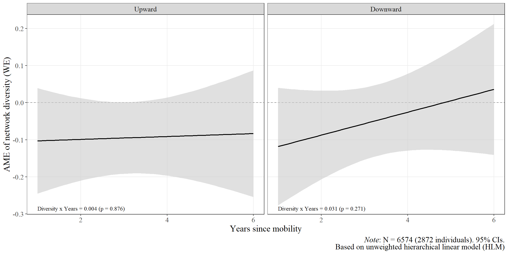
Table, unweighted models
htmlreg(unname(time_mods_unw[c("m1", "m2", "m3", "m4")]),
digits = 3, stars = c(0.001, 0.01, 0.05, 0.1), caption.above = TRUE,
caption = "Table S13. Hybrid multilevel models for market justice preferences, network diversity and time since mobility (unweighted)",
custom.model.names = paste("Model", 1:4),
custom.coef.map = var_labels_time,
custom.gof.rows = list("Controls" = rep("Yes", 4), "Weights" = rep("No", 4)),
include.aic = FALSE, include.loglik = FALSE,
custom.note = note_time(FALSE),
file = here::here("output/tables/table_time_since_mobility_unweighted.html"))Step 12. Time since mobility x mobility trajectory
Steps 10 and 11 ask whether the within-person association of diversity depends on time since mobility. This step asks the complementary question without a diversity interaction. Do market justice preferences differ by time since mobility within each trajectory? The models keep the same controls and diversity (WE) as a covariate. As in Step 10, time exists only for Upward and Downward respondents, so the full time x trajectory interaction is a single factor, traj_time, with reference Stable: low (the reference of Table S4). The linear version lets the slope per year differ between Upward and Downward.
- Model 5. Diversity (WE) + trajectory x time (categorical,
traj_time). - Model 5L. Diversity (WE) + trajectory + years since mobility, with separate slopes for Upward and Downward.
fit_traj_time_models <- function(d, weighted = TRUE) {
d <- add_time_vars(d, weighted)
f <- c(
m2 = "diversityclass_gc + mobility_profile + t_recent + t_inter", # time effect equal across trajectories
m5 = "diversityclass_gc + traj_time", # time x trajectory
m5l = "diversityclass_gc + mobility_profile + yrs_up + yrs_down")
lapply(f, function(x) lme4::lmer(as.formula(paste("market1 ~", x, "+", ctrl)), data = d, weights = w_use))
}
tt_mods <- fit_traj_time_models(paneldata137)
tt_mods_unw <- fit_traj_time_models(paneldata137, weighted = FALSE)
# Likelihood ratio test of the time x trajectory interaction (Model 2 nested in Model 5)
lrt <- function(ms) {
a <- suppressMessages(anova(ms$m2, ms$m5, refit = TRUE))
data.frame(chisq = a$Chisq[2], df = a$Df[2], p = a$`Pr(>Chisq)`[2])
}
rbind(weighted = lrt(tt_mods), unweighted = lrt(tt_mods_unw)) %>% mutate(across(c(chisq, p), ~ round(.x, 3)))| chisq | df | p | |
|---|---|---|---|
| weighted | 2.032 | 2 | 0.362 |
| unweighted | 0.978 | 2 | 0.613 |
Coefficients of trajectory x time (Model 5)
Each coefficient is the difference in market justice preferences (z-score) between that trajectory-time cell and Stable: low, holding the controls and diversity constant.
cells <- expand.grid(time = cats[-1], traj = c("Upward", "Downward"), stringsAsFactors = FALSE)
cell_coef <- function(m) {
do.call(rbind, lapply(seq_len(nrow(cells)), function(i) {
term <- paste0("traj_time", cells$traj[i], ": ", cells$time[i])
cbind(cells[i, c("traj", "time")], ame_lc(m, setNames(list(1), term)))
}))
}
coef5 <- cell_coef(tt_mods$m5); coef5_unw <- cell_coef(tt_mods_unw$m5)
merge(coef5[, c("traj", "time", "AME", "SE", "p")], coef5_unw[, c("traj", "time", "AME", "SE", "p")],
by = c("traj", "time"), suffixes = c("_weighted", "_unweighted")) %>%
mutate(across(where(is.numeric), ~ round(.x, 3)))| traj | time | AME_weighted | SE_weighted | p_weighted | AME_unweighted | SE_unweighted | p_unweighted |
|---|---|---|---|---|---|---|---|
| Downward | Early | 0.019 | 0.140 | 0.894 | 0.049 | 0.103 | 0.639 |
| Downward | Intermediate | 0.001 | 0.121 | 0.995 | 0.029 | 0.091 | 0.755 |
| Downward | Recent | 0.029 | 0.127 | 0.820 | 0.058 | 0.089 | 0.517 |
| Upward | Early | 0.065 | 0.125 | 0.603 | 0.052 | 0.097 | 0.594 |
| Upward | Intermediate | 0.218 | 0.124 | 0.078 | 0.160 | 0.094 | 0.089 |
| Upward | Recent | 0.029 | 0.115 | 0.802 | 0.097 | 0.085 | 0.251 |
# Linear version (Model 5L): slope per year and difference vs. Stable: low at 1 and 6 years
lin5 <- function(m) bind_rows(
cbind(term = "Slope per year, Upward", ame_lc(m, list(yrs_up = 1))),
cbind(term = "Slope per year, Downward", ame_lc(m, list(yrs_down = 1))),
cbind(term = "Upward vs. Stable: low, 1 year", ame_lc(m, list(mobility_profileUpward = 1, yrs_up = 1))),
cbind(term = "Upward vs. Stable: low, 6 years", ame_lc(m, list(mobility_profileUpward = 1, yrs_up = 6))),
cbind(term = "Downward vs. Stable: low, 1 year", ame_lc(m, list(mobility_profileDownward = 1, yrs_down = 1))),
cbind(term = "Downward vs. Stable: low, 6 years", ame_lc(m, list(mobility_profileDownward = 1, yrs_down = 6))))
bind_rows(weighted = lin5(tt_mods$m5l), unweighted = lin5(tt_mods_unw$m5l), .id = "estimation") %>%
select(estimation, term, est = AME, SE, p) %>% mutate(across(where(is.numeric), ~ round(.x, 3)))| estimation | term | est | SE | p |
|---|---|---|---|---|
| weighted | Slope per year, Upward | 0.005 | 0.023 | 0.834 |
| weighted | Slope per year, Downward | 0.012 | 0.031 | 0.696 |
| weighted | Upward vs. Stable: low, 1 year | 0.083 | 0.116 | 0.476 |
| weighted | Upward vs. Stable: low, 6 years | 0.107 | 0.119 | 0.368 |
| weighted | Downward vs. Stable: low, 1 year | -0.016 | 0.131 | 0.900 |
| weighted | Downward vs. Stable: low, 6 years | 0.045 | 0.130 | 0.732 |
| unweighted | Slope per year, Upward | -0.004 | 0.018 | 0.836 |
| unweighted | Slope per year, Downward | 0.001 | 0.022 | 0.967 |
| unweighted | Upward vs. Stable: low, 1 year | 0.112 | 0.086 | 0.191 |
| unweighted | Upward vs. Stable: low, 6 years | 0.093 | 0.091 | 0.305 |
| unweighted | Downward vs. Stable: low, 1 year | 0.043 | 0.092 | 0.638 |
| unweighted | Downward vs. Stable: low, 6 years | 0.048 | 0.096 | 0.616 |
Plots
y_diff <- "Difference in market justice preferences vs. Stable: low (z-score)"
plot_cell <- function(df, m) {
df$time <- factor(df$time, levels = cats[-1]); df$traj <- factor(df$traj, levels = c("Upward", "Downward"))
ggplot(ame_label(df), aes(x = time, y = AME, label = lab)) +
geom_hline(yintercept = 0, linetype = "dashed", color = "grey50") +
geom_pointrange(aes(ymin = lo, ymax = hi), size = 0.6, fatten = 2, color = "black") +
geom_text(nudge_y = 0.01, nudge_x = 0.2, hjust = 0, size = 3.4, family = "serif") +
scale_x_discrete(labels = time_labels) +
scale_y_continuous(expand = expansion(mult = c(0.05, 0.45))) +
coord_flip(clip = "off") +
facet_wrap(~ traj) +
labs(x = NULL, y = y_diff, caption = note_hlm(m)) +
theme_note
}
plot_lin5 <- function(m) {
yrs <- seq(1, 6, by = 0.1)
line <- rbind(
cbind(traj = "Upward", do.call(rbind, lapply(yrs, function(t) cbind(years = t, ame_lc(m, list(mobility_profileUpward = 1, yrs_up = t)))))),
cbind(traj = "Downward", do.call(rbind, lapply(yrs, function(t) cbind(years = t, ame_lc(m, list(mobility_profileDownward = 1, yrs_down = t)))))))
line$traj <- factor(line$traj, levels = c("Upward", "Downward"))
labs_df <- data.frame(traj = factor(c("Upward", "Downward"), levels = c("Upward", "Downward")),
lab = c(paste0("Slope per year = ", number(ame_lc(m, list(yrs_up = 1))$AME, accuracy = 0.001),
" (p = ", number(ame_lc(m, list(yrs_up = 1))$p, accuracy = 0.001), ")"),
paste0("Slope per year = ", number(ame_lc(m, list(yrs_down = 1))$AME, accuracy = 0.001),
" (p = ", number(ame_lc(m, list(yrs_down = 1))$p, accuracy = 0.001), ")")))
ggplot(line, aes(x = years, y = AME)) +
geom_hline(yintercept = 0, linetype = "dashed", color = "grey50") +
geom_ribbon(aes(ymin = lo, ymax = hi), fill = "grey80", alpha = 0.6) +
geom_line(linewidth = 0.8, color = "black") +
geom_text(data = labs_df, aes(x = 1, y = -Inf, label = lab), inherit.aes = FALSE,
hjust = 0, vjust = -1, size = 3.4, family = "serif") +
facet_wrap(~ traj) +
labs(x = "Years since mobility", y = y_diff, caption = note_hlm(m)) +
theme_note
}
p <- plot_cell(coef5, tt_mods$m5); p; save_fig(p, "figureS_traj_x_time.png", 2)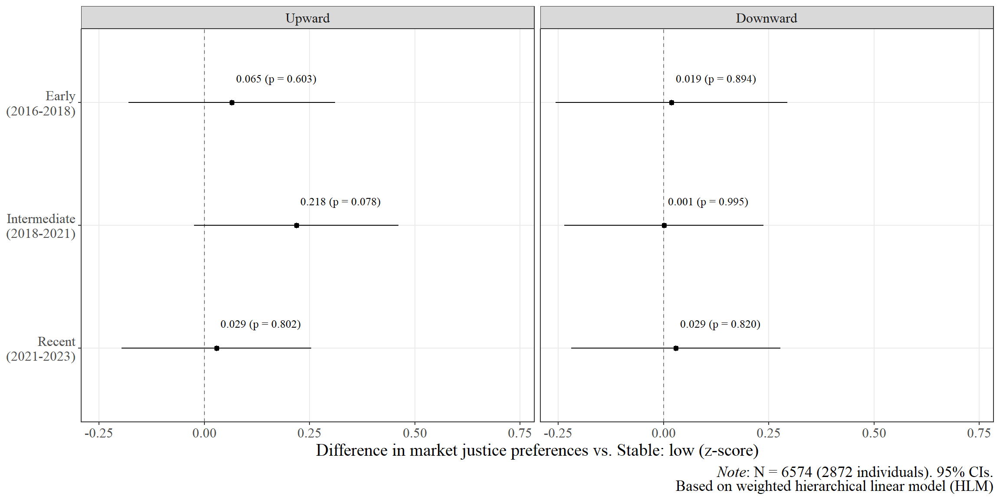
p <- plot_lin5(tt_mods$m5l); p; save_fig(p, "figureS_traj_x_time_linear.png", 2)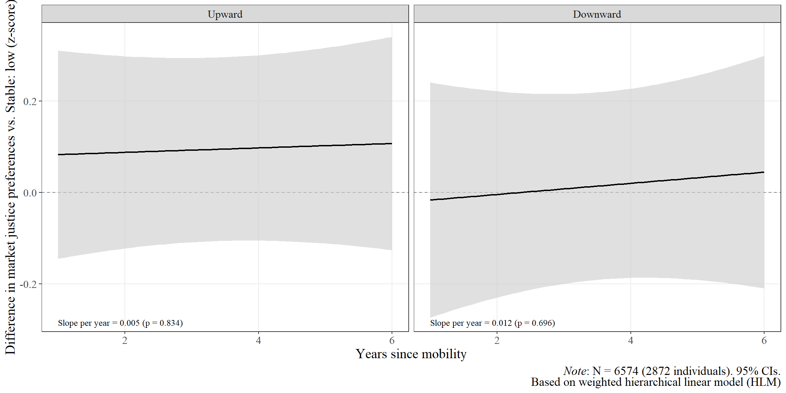
p <- plot_cell(coef5_unw, tt_mods_unw$m5); p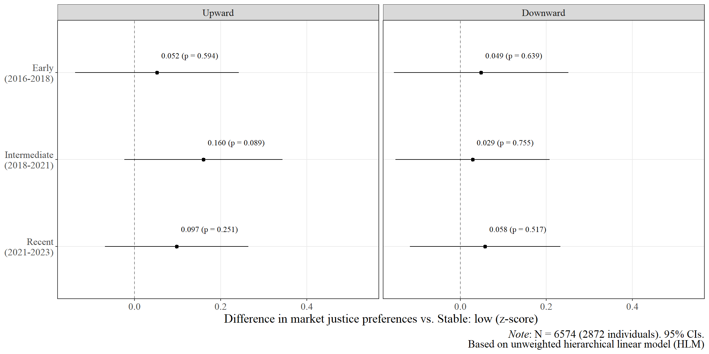
p <- plot_lin5(tt_mods_unw$m5l); p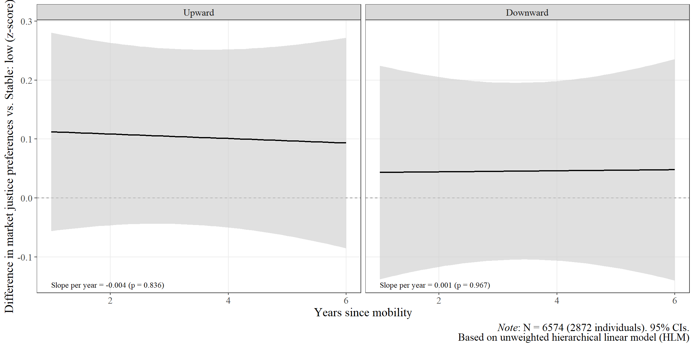
Table
var_labels_tt <- c(var_labels_time[c("diversityclass_gc", "diversityclass_gm", "sex", "age", "partner", "partner_gm", "time2", "time3", "(Intercept)")],
list("mobility_profileUpward" = "Upward (ref.=Stable: low)", "mobility_profileDownward" = "Downward",
"t_recent" = "Recent mobility (ref.=Early)", "t_inter" = "Intermediate mobility (ref.=Early)",
"yrs_up" = "Years since mobility x Upward", "yrs_down" = "Years since mobility x Downward"),
var_labels_time[grepl("^traj_time", names(var_labels_time))])
var_labels_tt <- var_labels_tt[!duplicated(names(var_labels_tt))]
htmlreg(list(tt_mods$m2, tt_mods$m5, tt_mods$m5l, tt_mods_unw$m2, tt_mods_unw$m5, tt_mods_unw$m5l),
digits = 3, stars = c(0.001, 0.01, 0.05, 0.1), caption.above = TRUE,
caption = "Table S14. Hybrid multilevel models for market justice preferences, trajectory and time since mobility",
custom.model.names = c("Add. (w)", "Traj x time (w)", "Linear (w)", "Add. (u)", "Traj x time (u)", "Linear (u)"),
custom.coef.map = var_labels_tt,
custom.gof.rows = list("Controls" = rep("Yes", 6), "Weights" = rep(c("Yes", "No"), each = 3)),
include.aic = FALSE, include.loglik = FALSE,
custom.note = paste0("%stars. Standard errors in parentheses. Hybrid random intercept models (REML). (w) weighted, (u) unweighted.<br>",
"Stable respondents are the reference (Stable: low). Time main effects in the additive model are relative to early mobility."),
file = here::here("output/tables/table_trajectory_x_time.html"))